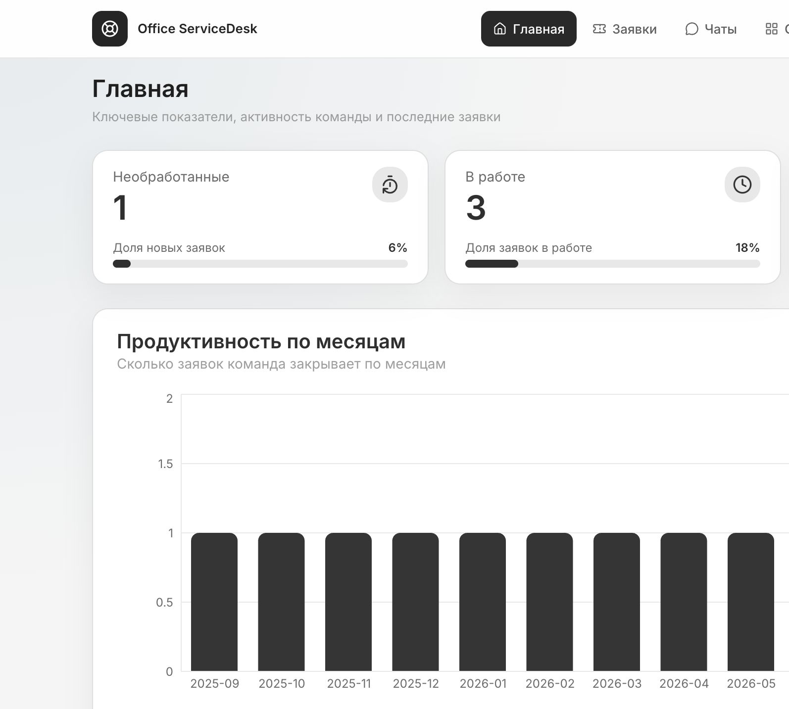
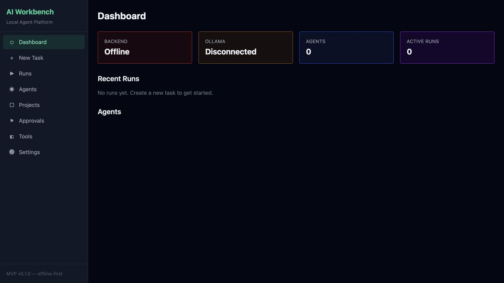
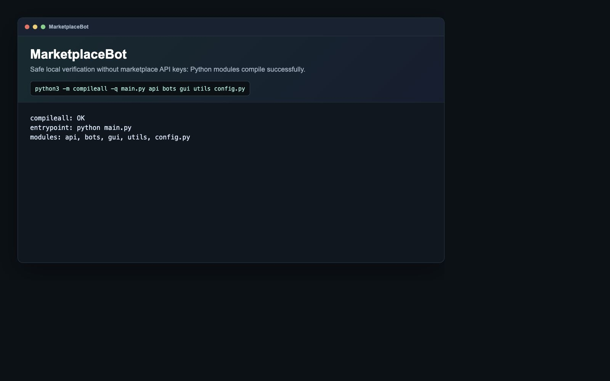
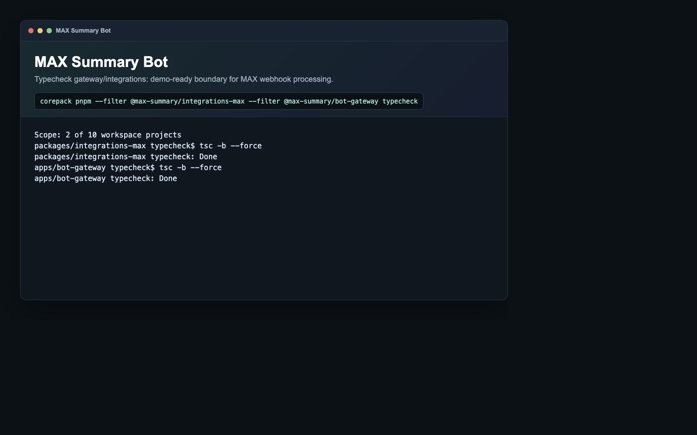
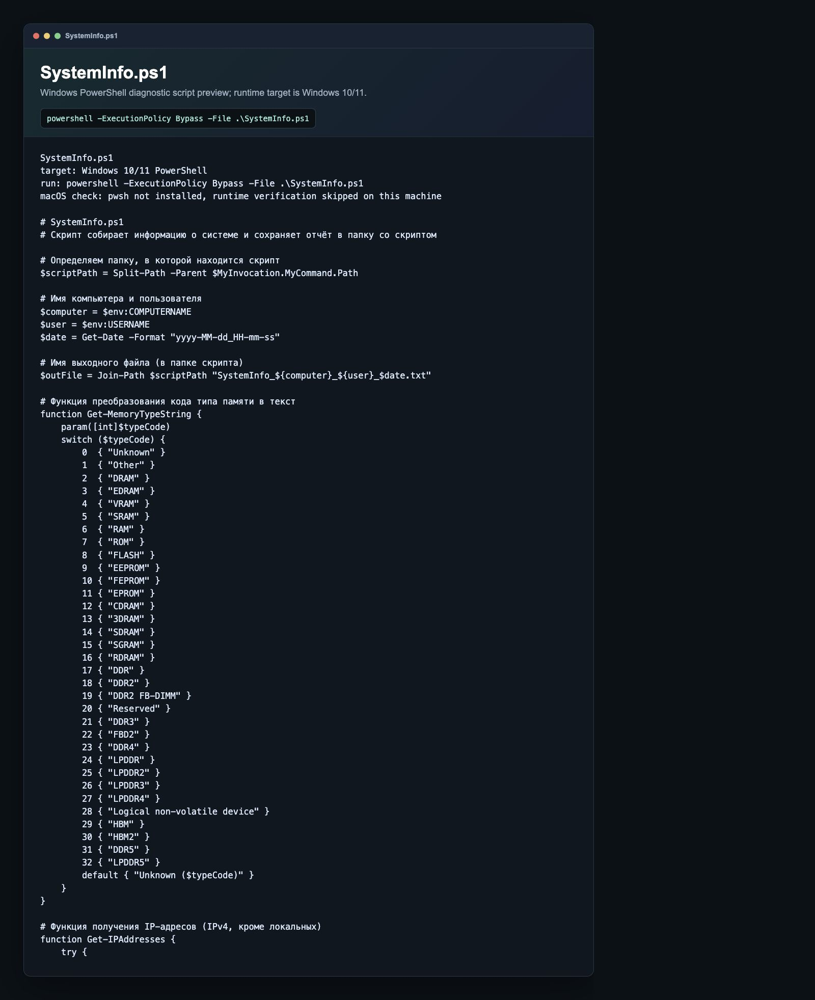
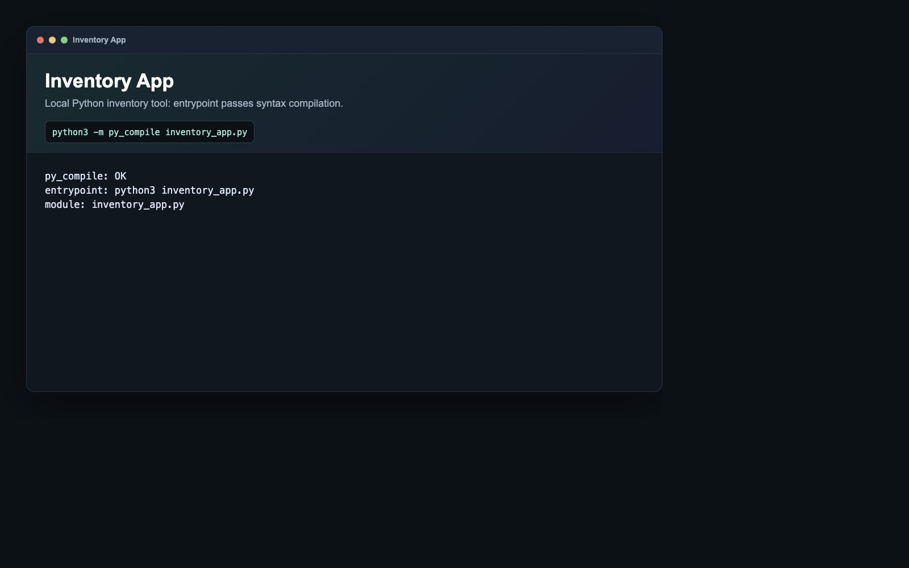

Сайты и интерфейсы
Лендинги, многостраничные сайты, личные кабинеты, админки и адаптивная верстка.
Портфолио для найма и фриланса
Системный администратор-программист, разработчик сервисов, сайтов, скриптов, ботов и игровых прототипов. Беру прикладные задачи, разбираюсь в процессе и довожу решение до рабочего состояния.
Обо мне
Работаю системным администратором-программистом и параллельно разрабатываю собственные и коммерческие проекты. Умею разговаривать с заказчиком без подробного ТЗ, переводить проблему в техническую структуру, делать frontend/backend, подключать API, работать с базами данных и проверять результат. Как системный администратор понимаю рабочие места, сети, права доступа, железо, комплектующие и реальные проблемы пользователей. Есть опыт OSINT, анализа сетевого трафика в Wireshark и практики на Hack The Box.
Что могу сделать
Лендинги, многостраничные сайты, личные кабинеты, админки и адаптивная верстка.
Telegram-боты, обработчики сообщений, интеграции с API и автоматизация процессов.
Python/PowerShell-скрипты, desktop-приложения, обработка файлов и вспомогательные инструменты.
Service Desk, CRM, таск-трекеры, роли доступа, REST API, базы данных, отчеты и панели.
Поддержка пользователей, диагностика Windows/Linux, настройка рабочих мест, скрипты и инвентаризация.
Unity, Unreal Engine, C#, прототипы механик, простые игровые системы и инструменты.
Инструментарий
Главные проекты

Портал для заявок сотрудников, очередей исполнителей, базы знаний, вложений, комментариев, email intake/reply, ролей доступа и администрирования. Заменяет хаотичный поток обращений в мессенджерах и Freshdesk.

Локальная offline-first платформа для многоагентной разработки: планирование задачи, распределение ролей, сохранение запусков и контроль действий. AI использую практично, как ускоритель разработки.

Desktop-приложение и боты для автоматических ответов на отзывы Ozon и Wildberries: GUI, шаблоны по рейтингу, расписание, настройки, логирование и Windows-сборка.

Бот для кратких выжимок из текста, ссылок и файлов. Messenger gateway нормализует payload, обращается к внутреннему API и возвращает структурированный ответ.

PowerShell-скрипт для сбора ключевой информации о Windows 10/11 без прав администратора. Полезен для диагностики, поддержки пользователей и инвентаризации рабочих станций.

Приложение для инвентаризации IT-оборудования: локальный учет техники, быстрый доступ к информации и простой инструмент под внутреннюю задачу.
Технологии
Контакты
Можно писать по задачам: сайт, бот, скрипт, небольшое приложение, автоматизация, внутренняя CRM/ServiceDesk, системное администрирование, диагностика ПК, подбор комплектующих, OSINT, Wireshark, простые игровые прототипы на Unity/C# или доработка существующего проекта.
{kind=link}
{kind=link}
{kind=link}
{kind=link}
{kind=link}
{kind=link}